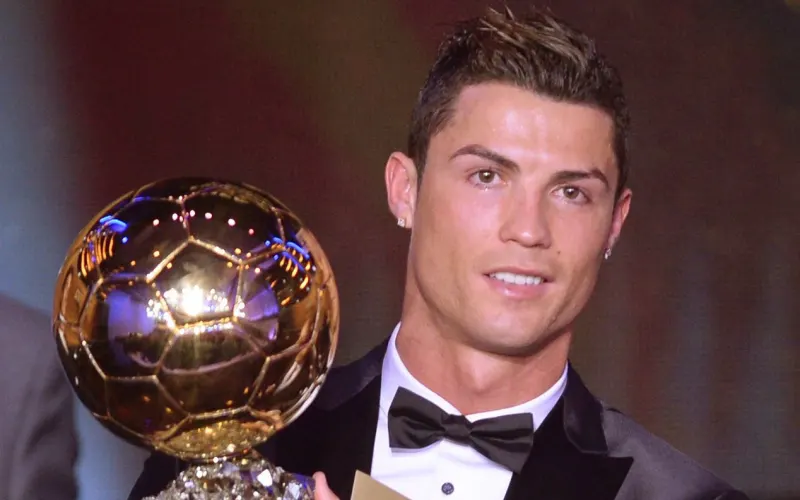

Early years
Cristiano Ronaldo was born on February 5, 1985, on the Portuguese island of Madeira. He took his first steps in sports at the local amateur club Andorinha - where his father worked part-time as a kit man-before briefly moving to Nacional. By the age of 12, the young footballer had successfully passed a trial at Sporting.
Professional career
In 2003, following a brilliant performance against Manchester United, 18-year-old Cristiano joined the English giants, where he developed into a world-class player under the guidance of Alex Ferguson. He went on to rewrite football history at Real Madrid.
Facts
- Five-time UEFA Champions League winner.
- The first footballer in history to win the English Premier League, the Spanish La Liga, and the Italian Serie A.
- Five-time Ballon d'Or winner
Career path
- Youth career(Sporting)
- Move to a top club(Manchester United)
- Career peak(Real Madrid)
- The next club(Juventus)
- Late career stage(Al-Nassr)
